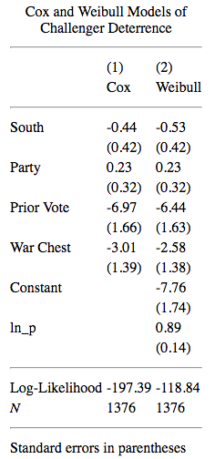

7 Inclusion of Time-Varying Covariates
This chapter makes use of data on challenger entry in U.S. House elections.
7.1 Warchest Data in Stata
Let’s load the dataset. Because we are dealing with TVCs, we want to convert the data into start and stop time format. Creating the start variable invovles lagging the ‘te’ variable and replacing the missing values with 0. The ‘te’ variable represents the stop time. Once we have the data in the right format, we can stset the data for analysis.
* Dataset is warchest.dta
use "~/Dropbox/github/liwu-gan.github.io/dta/warchest.dta"
* Create a lagged variable and replace the missing values with 0
by caseid: gen start = te[_n-1]
replace start = 0 if missing(start)
* Prepare data for analysis
stset te, failure(cut_hi) time0(start)7.1.1 Tables 7.4 and 7.5
I run the Cox and Weibull propotional hazard models.
* Estimate Cox model with Breslow ties
eststo clear
eststo: stcox south dem iv ec, nohr breslow
* Estimate Weibull proportional hazards model
eststo: streg south dem iv ec, dist(weib) nohrWe can generate the results in a table now.
* Reset working directory to collect following output
cd ~/Dropbox/github/liwu-gan.github.io/chapter7
* Generate regression table output
esttab using ch7_warchest_cox_weib.html, replace ///
coeflabel(south "South" dem "Party" iv "Prior Vote" ///
ec "War Chest" _cons "Constant") ///
title(Cox and Weibull Models of Challenger Deterrence) ///
mtitles("Cox" "Weibull") ///
eqlabels("", none) ///
b(2) se(2) nostar ///
stats(ll N, label("Log-Likelihood" "<em>N</em>") fmt(2 0)) nogaps ```
7.2 Warchest Data in R
Let’s load the warchest data. For time-varying covariates (TVCs), we want to convert the data setup to a counting process with a start and stop time. By breaking up the data into discrete intervals, we can accomodate covariates that change value within each interval. For each interval, we also observe whether the observation has failed or survived.
#-------Dataset
warchest <- read_dta("~/Dropbox/github/liwu-gan.github.io/dta/warchest.dta")
# Take a look at dataset
head(warchest)## # A tibble: 6 x 7
## iv ec caseid south dem te cut_hi
## <dbl> <dbl> <dbl> <dbl> <dbl> <dbl> <dbl>
## 1 0.620 0.00344 100 0 0 26 0
## 2 0.620 0.0110 100 0 0 50 1
## 3 0.590 0.143 201 1 0 26 0
## 4 0.590 0.159 201 1 0 53 0
## 5 0.590 0.203 201 1 0 65 0
## 6 0.590 0.217 201 1 0 75 0As we can see, the data right now only has information on how many weeks passes by for each observation (the ‘te’ variable). For example, caseid has two observations that are recorded at week 26 and week 50. We want to record this in counting process notation, which would signify a [0, 26] interval for the first observation and a [26,50] interval for the second.I lag the ‘te’ variable (which is the stop time) and replace the NAs with 0s, which records the start time.
#-------Data prepation
warchest <- warchest %>%
group_by(caseid) %>%
mutate(start = lag(te)) %>%
mutate(start = replace_na(start, 0)) %>%
rename(stop = te) %>%
select(iv:dem, start, stop, cut_hi)
head(warchest)## # A tibble: 6 x 8
## # Groups: caseid [2]
## iv ec caseid south dem start stop cut_hi
## <dbl> <dbl> <dbl> <dbl> <dbl> <dbl> <dbl> <dbl>
## 1 0.620 0.00344 100 0 0 0 26 0
## 2 0.620 0.0110 100 0 0 26 50 1
## 3 0.590 0.143 201 1 0 0 26 0
## 4 0.590 0.159 201 1 0 26 53 0
## 5 0.590 0.203 201 1 0 53 65 0
## 6 0.590 0.217 201 1 0 65 75 0# Specifying the survival object with the start and stop times and the event.
dv <- Surv(warchest$start, warchest$stop, warchest$cut_hi)7.2.1 Table 7.4
# Run Cox model with Breslow approximation
warchest_cox <- coxph(dv ~ south + dem + iv + ec,
data = warchest, ties = "breslow")Here is the output, with the standard errors in parentheses:
| South | -0.44 (0.42) | |
| Party | 0.23 (0.32) | |
| Prior Vote | -6.97 (1.66) | |
| War Chest | -3.01 (1.39) | |
| N | 1376 | |
| Log Likelihood | -197.39 | |
7.2.2 Table 7.5
The survreg function, which is typically used to run parametric survival models, cannot accomodate start-stop data structures. As such, I use the package ‘eha’ instead, using the phreg command to get run a proportional hazards Weibull model (Weibull is the default distribution, so I do not need to specify it).
warchest_weib <- phreg(dv ~ south + dem + iv + ec, data = warchest)
warchest_weib## Call:
## phreg(formula = dv ~ south + dem + iv + ec, data = warchest)
##
## Covariate W.mean Coef Exp(Coef) se(Coef) Wald p
## south 0.256 -0.532 0.588 0.420 0.205
## dem 0.607 0.231 1.260 0.324 0.476
## iv 0.733 -6.443 0.002 1.629 0.000
## ec 0.195 -2.583 0.076 1.380 0.061
##
## log(scale) 3.189 0.449 0.000
## log(shape) 0.890 0.143 0.000
##
## Events 40
## Total time at risk 25359
## Max. log. likelihood -272.2
## LR test statistic 29.83
## Degrees of freedom 4
## Overall p-value 5.29638e-06I format the results into a regression table:
| South | -0.53 (0.42) | |
| Party | 0.23 (0.32) | |
| Prior Vote | -6.44 (1.66) | |
| War Chest | -2.58 (1.38) | |
| Shape Parameter | 2.43 | |
| N | 1376 | |